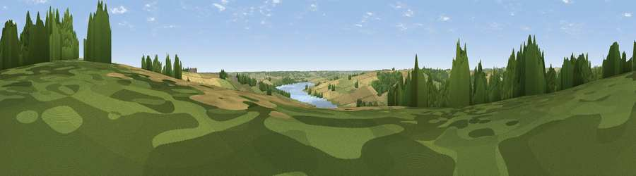

Viewpoint near Stockerston
#32028 in England · top 38% of its area beats it · near StockerstonThe view, rendered

A 360° render of this exact spot computed from the terrain model, tree cover and land cover — summer colours, afternoon light, calibrated against photographs of famous viewpoints. Real trees, hedges and buildings will differ in detail.
The panorama
Grey silhouette: terrain skyline in each direction (720 bearings, Earth curvature and refraction included). Dashed green: skyline with trees (+15 m) and buildings (+8 m) as obstacles. Blue strip: how far the ground is visible on each bearing.
Where the view opens
Wedge length = distance to the farthest visible ground on that bearing (vegetation-aware). Rings at 10, 25 and 50 km.
What fills the view
44% grassland · 34% cropland · 16% woodland · 5% water
Angular shares of the visible panorama (visual magnitude), not map area. Landscape diversity 0.52 (0–1 Shannon).
Key numbers
More beautiful places nearby
The staircase of upgrades: each row has a higher view potential than everything closer. Driving times are estimates from straight-line distance, calibrated against real road routing — check an actual route before setting out.
| Place | Direction | Drive | Score |
|---|---|---|---|
| Viewpoint near Stoke Dry | SE · 2 km | ~5 min | 47.5 |
| Viewpoint near Rockingham | SSE · 7 km | ~14 min | 48.7 |
| Viewpoint near East Norton | WNW · 7 km | ~15 min | 53.2 |
| Robin-a-Tiptoe Hill | NW · 10 km | ~19 min | 54.6 |
| Whatborough Hill | NW · 11 km | ~22 min | 57.1 |
| Viewpoint near Cold Newton | WNW · 15 km | ~27 min | 57.3 |
| Viewpoint near Burrough on the Hill | NNW · 17 km | ~29 min | 63.4 |
| Viewpoint near Burrough on the Hill | NNW · 17 km | ~29 min | 66.0 |
52.57120, -0.75058 · source: screening · position refined by local search. Computed location — check access rights before visiting.